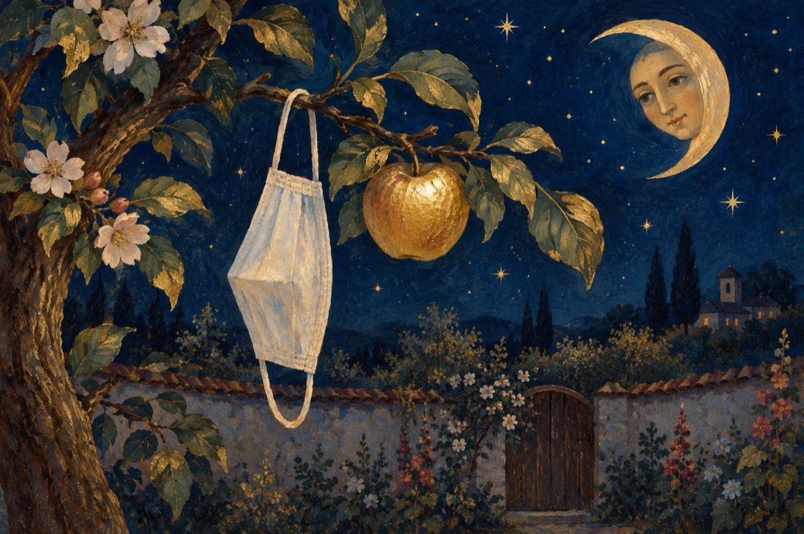

Bună dimineața viață
Bună dimineața mască
Singura noastră speranță
COVID-19 bântuiește
Noi murim și el trăiește!
Ne luptăm cu nu știu cine,
Nici nu știm de unde vine,
Ba ne ia și ba ne lasă,
Se joacă cu-a noastră viață!
În fosta democrație,
Libertatea a dat să vie.
Ajuns-am acum se pare,
Cu toții la închisoare!
Făr' ca să purtăm cătușe,
Fără lacăte pe ușe,
Fără paznici înarmați
De COVID-19 încătușați!
Până când ne întrebăm oare,
Asemenea închisoare?
Adam și Eva s-au împreunat,
Și lumea de azi au creat!
Astăzi ca în rai trăim,
Condiția-i să nu ne unim!
Sfatul ,,LOR” să-l urmăm,
Și din măr să nu mușcăm!
Că dacă greșim vreodată,
Mergem pe lumea cealaltă!
Se pare; Știința de astădată,
E în EPOCA DE PIATRĂ!
Vasile Groza